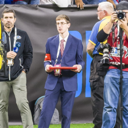
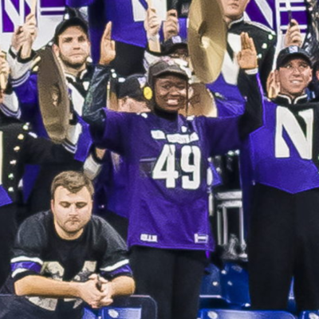

Ari Levin is a reporter from Boca Raton, Florida. He reports on sports and Northwestern athletics for WNUR Sports. He is a senior at Northwestern with a double major in Journalism and Mathematical Methods in the Social Sciences. He was the sideline reporter at the game.
For this project, he helped write the story, created the website, embedded the Knight Lab elements, and made the animation and interactive game.

Debbie-Marie Brown is a reporter and musician from New Britain, Connecticut, with a passion for news, politics and people. Brown loves to explore topics akin to communities of color, mental health, border politics, queer identities, spirituality, and more. She is a junior studying journalism at Northwestern, with minors in Latino/a Studies and African-American Studies. She was with the marching band at the game.
For this project, she helped write the story, organized interviews, created the podcast, and made the graphs and the quiz.